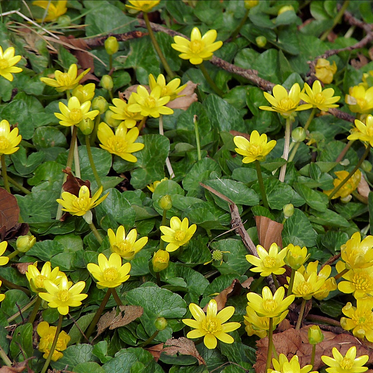

Lesser Celandine
About
 Lesser Celandine (Ficaria Verna), also known as a fig buttercup, is a low growing perrennial flowering plant native to Europe, Asi, and Northern Africa. It typically blooms in early spring in thick, dense mats in shaded areas. It is calssified as an invasive species in Ohio, as it thrives in our native woodlands, wetlands, and streambanks. It was introduced as a decorative plant, but has spread to natural areas, disrupting local growth patterns.
Lesser Celandine emerges earlier in the spring than most agricultural crops, posing issues to farmeres as its roots can make it harder from crops to root. As such, it has a great competitive advantage, allowing it to monopolize recources like water, light, and nutrients. Its mats are incredibly dense and large, often killing entire feilds of crops. In addition, it reproduces incredibly quickly and spreads through the wind, making it nearly impossible to control.
Identification
Lesser Celandine is easily recognizable by its shiny, dark green, kidney-bean shaped leaves and bright yellow flowers resembling buttercups. These flowers often take up entire feilds, and rarely if ever grow alone. They prefer shaded and moist areas, but can be found anywhere among other grassy plants.